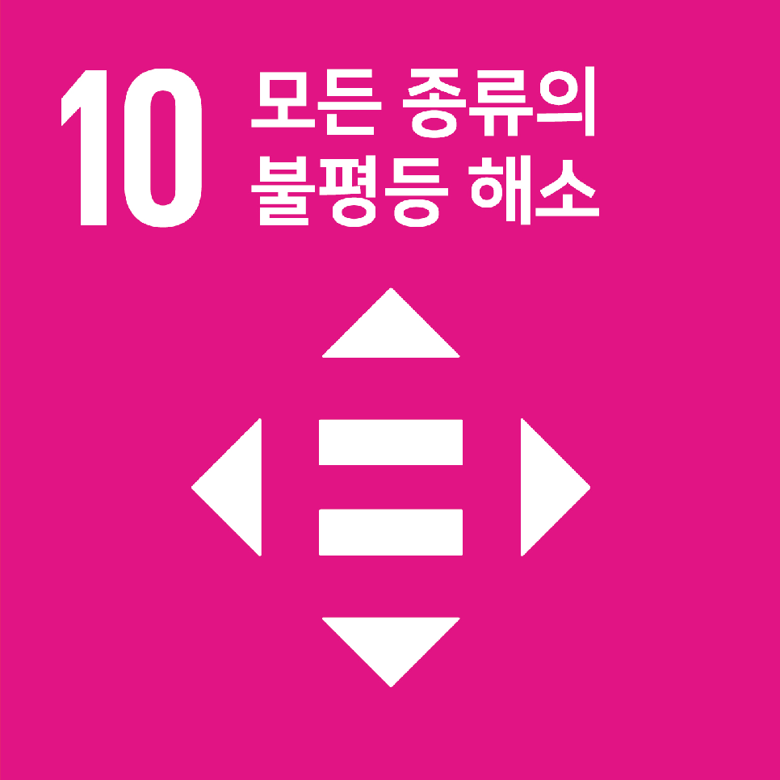

딥비전스의 Hidden Impact
산업군 (GICS 기준): 데이터 기반 환경 솔루션
MSCI 기준 SDGs 유사도 TOP 3
2nd

SDG 11: 지속가능한 도시와 주거지
1st

SDG 3: 건강하고 행복한 삶
3rd

SDG 8: 좋은 일자리 확대와 경제성장
8/10
소셜 임팩트 최종 점수
평가 근거:
AI 융합 기술로 대기 질 정보의 사각지대를 해소하고, 시민 건강 증진과 지속가능한 도시 환경 조성에 기여하는 점을 높이 평가합니다. 사업 확장이 사회적 가치 창출로 직결되는 명확한 선순환 구조를 보입니다.